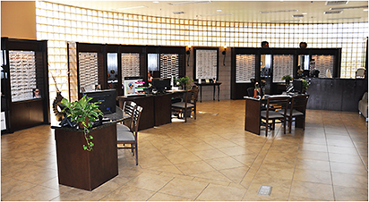
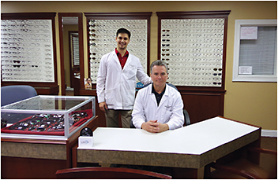

Ophthalmologists who want color in their clinic, more oomph to their bottom line and diversity in their product mix should consider running an in-house dispensary. With some solid business acumen and willingness to treat the dispensary as an extension of the eye-care practice, those in the know say your investment would pay off.
Ophthalmologists usually don’t run their dispensary — the necessary classes to do so weren’t on the med school curriculum. But those who have them — and turn a healthy profit on them — know what’s going on. “Ophthalmologists need to educate themselves on how to run their dispensary businesses better,” says Arthur DeGennaro, president of Arthur DeGennaro & Associates, LLC, Practice Management Consultants, Lexington, S.C., which designs and installs ophthalmology dispensaries.
About 70% of ophthalmology practices have dispensaries — so those physicians know that if they don’t concentrate on the so-called capture rate, red ink will flow. The capture rate is the percentage of patients whose prescriptions are filled at their providers’ offices. Other factors affecting a successful dispensary operation: inventory selection, training staff in customer service and educating patients about the better service your office provides as opposed to someone else’s.
Make your dispensary an attractive place to visit.
COURTESY BSM CONSULTING
Focusing on the capture rate means paying attention to consistently increasing it — and reaching that goal without spending additional funds for advertising and staff.
The effort pays off. Carolyn Salvato, director of Optical Consulting, BSM Consulting, Bridgeton, Mo., estimates that one additional new spectacle purchase per day would add about $37,000 in additional annual profit per doctor. She bases that figure on factors including one prescribing doctor, the average sale of $260, a 42% cost of goods ratio, and unchanging operating expenses.
Optical staff should be ready to provide solutions to patients’ vision needs.
COURTESY MAZZUCA EYE AND LASER CENTERS
But when the capture rate stays flat, it hurts in multiple ways, says Ron L. Greenberg, executive vice president of Medical Eyeglass Center, Westfield, N.J., a dispensary management firm. He laments situations in which business slips away when patients looking for lower prices take their prescriptions to retailers. Not only does the practice lose the business, but then, if these patients are dissatisfied with the glasses the retailers make, the retailers blames the refraction and tells these patients to return to the ophthalmologist for a new refraction. Which they do, expecting to get that new refraction for free. This costs the practice time and money, Mr. Greenberg points out. “I am not anti-retail,” he says. “There is plenty of business for everyone. However, we need to close the ‘treatment loop’ by convincing patients, through better pricing and communication, to buy lenses and frames at the same place where they got their examinations.”
Mr. Greenberg says to maximize the dispensary’s capture and utilization rates, all staff should use phrasing throughout a patient’s visit designed to increase foot traffic in the dispensary after the examination is complete. “We focus on medical reasons to interact with our opticians before, during and at the conclusion of the patient visit,” Mr. Greenberg says. These reasons include neutralizing glasses, dilating patients and simply directing patients at the conclusion of the exam. “These in turn drive our capture rates to their potential.”
Practices using electronic medical records also can increase capture rates, Ms. Salvato says. “The prescription can be printed in the dispensary, so all applicable patients must go there to pick them up.” Patients are not always aware the practice even has an optical, she notes.
That’s a good point, says Mr. Greenberg, but more is needed. The physician should discuss the change in the prescription with their patients and inform them that the new prescription will be waiting for them in the dispensary. The optician, he should tell them, will be there to review the lens options. In other words, treat the dispensary as a treatment-prescribing component of the business.
When the patient meets the optician, the medical mindset must continue. “We educate our opticians to approach patients by asking questions and providing solutions to patients’ visual issues,” says Mr. Greenberg.
Once physicians and staff adjust their outlook regarding the dispensary, issues such as sales tactics and customer service are more easily resolved. For one, it rules out high-pressure sales tactics. Instead, patient education is the name of the game.
“It’s important to educate patients about their eyewear choices, not only against competitors, but also within your own dispensary,” says Mary Walker, COE, director of operations, Vision Associates, Warren, N.J. “We don’t ever want to alienate the patient who doesn’t want to invest hundreds in designer eyewear.” She recommends offering a $99 package that includes a quality frame, lenses and full warranty. “Opticians must be able to explain each eyewear choice and let the patient decide.”
Informed, attentive service from the optical staff is more than a question of going the extra mile. Mr. DeGennaro cites better, more reliable customer service as being an essential factor in improving your dispensary’s capture rates and closing the treatment loop.
While ophthalmologists should be price sensitive, they also should be mindful — and should make their patients mindful — of the advantages their dispensary can offer them. A retail optician, for instance, cannot confer with the patient’s doctor should an issue arise.
Mr. Greenberg notes, “Competition exists, and practices need to be competitive.” His optical prices are 10% to 15% less than some major national chains and include budget-priced frame selections. However, he says, “We don’t worry about being the low-cost provider in the market, as that business is not suitable for the ophthalmology community in general.”
Internal marketing, Ms. Salvato explains, helps let patients know about the availability of reasonably priced eyeglass packages to compete with the low-cost retail sector. Another aid in closing the sale: informing patients when warranties — an add-on at some retailers — are included in the price. “Make sure your optical staff knows this and passes the information on to the patient,” says Ms. Salvato.
As for inventory, Ms. Walker recommends that opticals “limit the number of vendors you are doing business with in order to maximize your buying power with each vendor.” And beware of buying too much. “Inventory over-buying is often the reason dispensaries are not as profitable as they should be,” she says. “We aim for a three-to-five times annual inventory turn in each dispensary, meaning if you carry 500 frames, you would be selling 1,500 to 2,500 pairs of glasses a year. I’ve seen offices stocked with 1,500 frames and annual sales of 1,000 units; basically their profits are all hanging on their frame boards in the form of inventory.” Running a successful dispensary requires an emphasis on quality, Ms. Walker notes, but there is no need to carry thousands of frames to bring customers in. “With careful buying you can offer a great selection with 500 frames.”
Designer frames will draw patients, but be sure to include lower-priced selections as well.
COURTESY VISION ASSOCIATES
“The best thing is to have a well-run and well-stocked dispensary,” says Mr. DeGennaro. “A major matter is convenience.” The price must be fair, he added, and the materials better than the competitions’.
A final piece of advice for dispensary success: Mr. DeGennaro cautions against relying heavily on referrals. “A direct-to-consumer model is more resilient today,” he says. The goal is to induce the eye health-care consumer to come to you. If 20% of your sales come from referrals, what would happen to a practice if the referring OD decides to stop referring?
“A better model is to appeal directly to the consumer,” he says. This, of course, means marketing. “Viable marketing is nothing more than creating value for people and educating them that that value is available,” Mr. DeGennaro explains. “If your value story resonates, they will be attracted to your practice.” OM